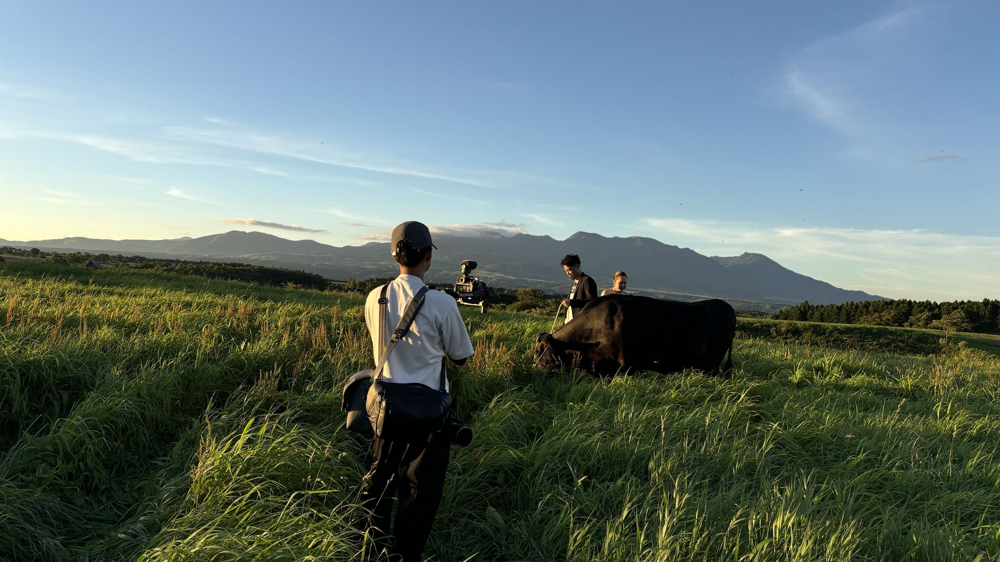
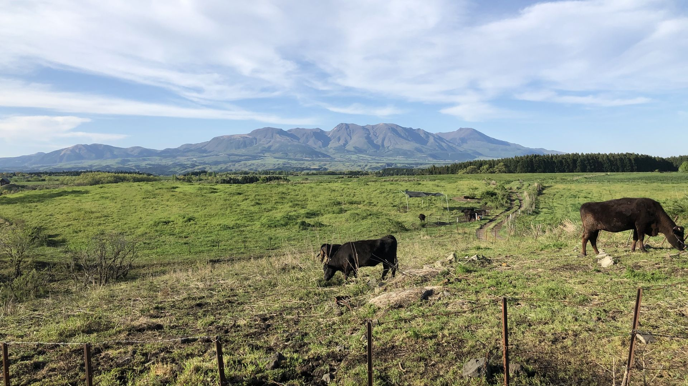
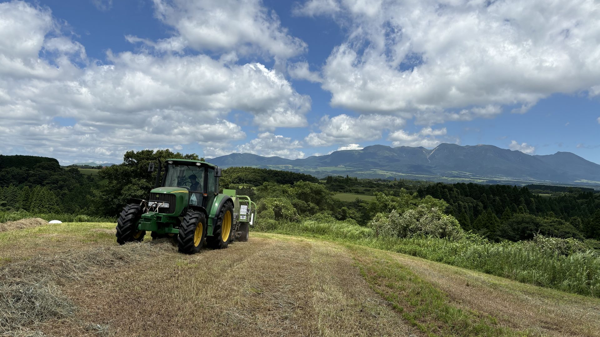
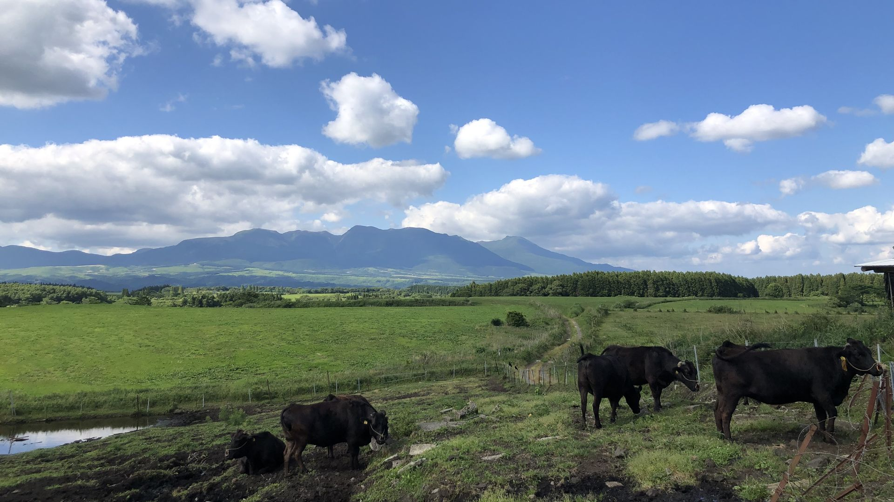

産山の清らかな水と一貫飼育の徹底。誕生から出荷まで、一頭一頭に命の責任を持ちます。
親子三代。長年培った確かな目が、阿蘇が誇る和牛本来の旨みを引き出します。
ITは、牛と向き合う時間を生むために。効率化の先にあるのは、変わらぬ愛情です。
産山高原の牧場から、日々の風景と牛とともに過ごす時間をお届けします。
三代目の修行・社長の日々の想い・スタッフの記録を、Facebookで随時更新中。
→ 牧場日記を見る